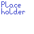

Close Menu
Full Demo
Documentation
GUI Screenshots (to come)
FAQ
Contact
Code Samples (to come)
☰
L.A.R.S.
L . A . R . S .
Luke's Automation and Robotisation System
Documentation
What is L.A.R.S.?

L.A.R.S. is the a homemade application and server created to power home automation
Amazon's Alexa is an intermediary to speak to L.A.R.S., and requires developers to choose an arbitrary name to invoke applications. I chose L.A.R.S., named after Lars Bak
Application Logic: Python, Java, PHP, BASH, Ruby, C#
Web Interface: HTML5, JavaScript, PHP
Voice
: Speak out loud anywhere in the house "
Alexa, tell L.A.R.S. to
....."
GUI
: Tapping the touchscreen panels in our kitchen, living room, dining room or conservatory.
Chatbot
: An text-messaging interface that allows you to interact with L.A.R.S. as if you had spoken to him with audible voice commands.
Web Service:
JSON REST
CLI: '
L.A.R.S.
' executable command-line scriptable interface
Blockchain
A localized etheruem blockchain runs on the main linux server
The interactive
Task List
and associated rewards are tracked as a homewide cryptocurrency on the ethereum blockchain mentioned
Chore Chart
- say out loud "Alexa, tell L.A.R.S. to remove one point from Luke", or
"Alexa, ask L.A.R.S. to report on the status of the parent's points", or
Go to one of the touchpanels and tap the "Rewards" dashboard.
Each point is a cryptocurrency token and can be exchanged for 30 minutes of electronic entertainment (TV, Video Games).
Robotic Process Automation
L.A.R.S. is programmed as a
virtual fitness trainer
with daily custom routines that do not repeat
Family Fact Study
is automated by L.A.R.S. (loads the 'next chapter' in study, reads it to aloud, and scrolls synchronized text on screens)
Virtual Fitness Trainer
- Go in to the conservatory and say out loud "Alexa, tell L.A.R.S. to start a workout", or
Use the touchpanel in the conservatory to select a routine.
Family Fact Study
- Ask Alexa to tell L.A.R.S. you'd like to start a study session, or use the touchpanel "Learning" dashboard.
Data Science / Artificial Intelligence
L.A.R.S. uses a deep learning model built with
TensorFlow
to determine if all rooms are messy or clean. Then it only allows the family to play games or watch TV if they're clean.
MachineBox.io
and
Microsoft Azure
(Cognitive Services) are used for automatic facial recognition and cognitive captioning of photos and videos
Home energy usage is monitored in real-time by
Sense Energy Monitor
-- which uses machine learning to detect physical devices based on their power signatures
Alexa Voice Recognition
is pervasive throughout the house via Amazon Echo Dot devices. Spoken commands are routed to the L.A.R.S. server for actioning
The childrens'
educational reports are marked daily by L.A.R.S.
, which then awards cryptocurrency based on the grade attained
Facial Recognition & Cognitive Captioning
happen automatically on all photos taken.
Speech Transcription, Sentiment Analysis, Topic/Theme Identification & Facial Recognition
are all applied to the video recordings.
A.I. Room Cleanliness
is shown on the GUI and L.A.R.S. will decline requests to turn on devices if the rooms aren't clean.
Sense Energy Monitor
can be viewed on the L.A.R.S. GUI. On touchpanels, tap the "Power Sense" tab.
Alexa Voice Recognition
is prevalent throughout the house.
Educational Log Marking
, ask how Luke's school work seems today: "Alexa, ask L.A.R.S. how school is going."
Internet of Things
All vehicles are fitted with
real-time GPS tracking
that is relayed to the server and can be viewed on GUIs in the house and on mobile interfaces
Wifi-enabled
IoT buttons
are placed throughout the house to perform various tasks automatically (burglar alarm, job completion, watch specific show, toggle lights, etc)
Connected
Pi Zero Motion Sensors
trigger actions based on location and time of day
Pi Zero W's are mounted on all doors with
Accelerometers
to provide alerting and tracking
PoE
Pi Cameras
are installed inside and out (controlled by L.A.R.S. which gives alerts when someone is at the front door and displays a live feed on all displays, including TVs)
Virgin Media
TV-Over-Ethernet
is provided by TIVO (and thus can be viewed on any device in the house, and recorded on the server)
Wifi-enabled lights
are installed throughout the house to provided color-coded visual notifications for events such as text messages, doors opening, front-door visitors, etc
Real-time Vehicle Tracking
- tap the 'Cars' tab on the touchpanels or request: "Alexa, ask L.A.R.S. where the cars are."
Wifi
IoT buttons
- buttons in the living room will start favourite Netflix and TV shows, buttons on the fridge mark chores as complete, alarm buttons sound the burglar alarm and the dinner gong is located on the fridge.
Connected
Motion Sensors
- enter the bathroom and the floor lights come on (for late-night trips).
Door Pi Monitor
- open or close the doors and L.A.R.S. will make an audible announcement via Alexa, stating the person's name if recognised.
Smart Surveillance Cameras
can be viewed on the 'Cameras' tab on the GUI. Tap any camera to view the live feed or ask L.A.R.S. to display them and they'll appear on the nearest display.
TV-Over-Ethernet
- ask Alexa to "tell L.A.R.S. I want to watch Comedy Central" and the nearest TV will turn on and tune in.
Wifi-enabled lights
- send a message to Luke and the lights will flash and Alexa will read it aloud while L.A.R.S. displays the message on his computer.
Other Workflows
When L.A.R.S. detects a parent returning from work in the evening, it sends a text to the children if they are at home to let them know someone is on their way back.
View the "Weather" tab on the touchpanel GUI. This is what autoloads and displays in all rooms while everyone gets ready for work and school.
Five touchpanels are currently in use: Kitchen, Living Room, Dining Room, Conservatory and Luke's Room. They all display the interactive L.A.R.S. dashboard GUI.
Whole-house audio can be controlled on the Music tab on the L.A.R.S. GUI. Supported music includes Amazon Music, Youtube, and Radio Stations.
After a power outage, L.A.R.S. pings every device in the house and lets me know what's offline.
L.A.R.S. can also be contacted through an interactive
chatbot interface
Cloud Computing
Storage
- entire network is synchronized to a series of Google Drive accounts
Compute
- additional server functionality and "offsite logic" is provided by a remote linux server
Camera Phone Photos
are synchronized in real-time between the phone, cloud, and L.A.R.S. (immediately available in a homemade cloud photo system called
L.A.R.S. Image Server
)
×
Frequently Asked Questions
[example question]
[example summary]
[example point]
[example sub1point]
[example sub2point]
[example sub3point]
Contact
testaddress@test.org.uk